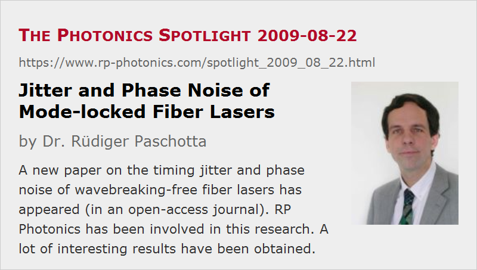

Jitter and Phase Noise of Mode-locked Fiber Lasers
Posted on 2009-08-22 as a part of the Photonics Spotlight (available as e-mail newsletter!)
Permanent link: https://www.rp-photonics.com/spotlight_2009_08_22.html
Author: Dr. Rüdiger Paschotta, RP Photonics Consulting GmbH
Abstract: A new paper on the timing jitter and phase noise of wavebreaking-free fiber lasers has appeared (in an open-access journal). RP Photonics has been involved in this research. A lot of interesting results have been obtained.

Ref.: O. Prochnow et al., “Quantum-limited noise performance of a femtosecond all-fiber ytterbium laser”, Opt. Express 17 (18), 15525 (2009) (open access!); see also references therein
Even though I largely work for industrial customers in these days, occasionally I enjoy being involved in some interesting research. A paper on the most recent work just appeared in Optics Express, see above. This work was done in collaboration with colleagues from the Laserzentrum Hannover.
There have been plenty of papers reporting some timing jitter measurements on mode-locked fiber lasers, so what is exciting about another one? That there is also some modeling, and a reasonable agreement between experiment and theory? No, it's really more than that. If it weren't, I would not have been keen to be involved. But I am delighted to report that we really learned a lot.
What is the Noise Level of Wavebreaking-free Fiber Lasers?
First of all, little has been known on the noise properties of wavebreaking-free fiber lasers. In contrast to soliton mode-locked lasers, these devices exhibit a rather sophisticated pulse evolution, with strong changes of various pulse parameters in each resonator round trip, and with strong influences of chromatic dispersion and the Kerr nonlinearity. There are no analytical models describing such lasers and particularly their noise properties. So we are operating in a regime where there are open questions.
One such question was whether we get a reasonable estimate of the timing jitter by applying a simple analytical model which ignores the complicated pulse evolution. It was well conceivable that this could work, but equally possible that it wouldn't. But how to test that? Many would say: Just compare the analytical results with the measured data, then you see it. Well, it is not as easy as that. The experimentally measured noise was substantially stronger, but what is the reason? Is it that the simplified model is inadequate in this case, or is there simply technical excess noise in the experiment, as it is often observed? Note that these models typically just say what should happen if there are only quantum noise influences in the system, but it hard to find out how much excess noise there is in an experiment.
To resolve that question, I set up a numerical simulation, where the pulse evolution under the influence of quantum noise is simulated and the noise properties are statistically evaluated. In contrast to the situation with an analytical model, a numerical model can contain much more detail of the pulse evolution, and we can still solve the equations numerically. So it is kind of intermediate between the simple model and the experiment, and we obtained important insight from that exercise. The numerical results also indicate noise far above the level expected from the simple model, and that level fitted well to that of the experiment. So the conclusions are that (a) the simple analytical model, ignoring details of the pulse evolution, is really too simple, and (b) that the influence of technical excess noise on the experiment appears not to be substantial.
Phase Noise and Carrier–Envelope Offset Noise
An important part was that we also investigated the optical phase noise and the noise of the carrier–envelope offset. Both have interesting relations to the timing jitter, as already discussed in an earlier paper (R. Paschotta et al., Appl. Phys. B 82 (2), 265 (2006)). My modeling (both analytical and numerical results) indicated that the optical phase noise should be quite weak, whereas the noise of the carrier–envelope offset is strong. This is very much in contrast to a situation where the timing jitter would result from fluctuations of the resonator length: in that case, the optical phase noise would be much stronger, whereas such fluctuations contribute little to the carrier–envelope offset noise. So the theory says that the jitter and phase noise resulting from quantum fluctuations behave quite differently from that resulting from resonator length fluctuations. And indeed the experimental data were found to be just as the theory predicted! This is also another confirmation that the noise in our laser results mainly from quantum noise influences.
Conclusions for Fiber-based Frequency Comb Sources
We can also put that work in another context: the development of low-noise mode-locked laser sources generating frequency combs. Fiber lasers are attractive because they could be cheaper sources for various applications. However, most types of mode-locked fiber lasers are very much limited in terms of (intra-cavity) pulse energy and also often produce somewhat longer pulses. For both reasons, such lasers are subject to relatively strong influences of quantum noise. Now, these wavebreaking-free fiber lasers (as considered in our work) look very promising, as they can deliver substantially increased pulse energies and rather short pulses as well. Unfortunately, our work demonstrated that this does not necessarily translate into superior noise properties: the complicated nonlinear pulse dynamics lead to substantially stronger noise than expected from simplified models. If it is so, we at least are glad to know it.
A Remark on Modeling
As a side remark, I hope this work demonstrates that modeling work is much more than setting up a model, comparing some results with measurements, and celebrating some nice agreement. (I have seen too many of those papers.) The point of scientific research is not to demonstrate some agreement, but to learn something new. For that, a model can be a powerful tool, but the crucial ingredient is to utilize such a tool in an intelligent way.
This article is a posting of the Photonics Spotlight, authored by Dr. Rüdiger Paschotta. You may link to this page and cite it, because its location is permanent. See also the RP Photonics Encyclopedia.
Note that you can also receive the articles in the form of a newsletter or with an RSS feed.
Questions and Comments from Users
Here you can submit questions and comments. As far as they get accepted by the author, they will appear above this paragraph together with the author’s answer. The author will decide on acceptance based on certain criteria. Essentially, the issue must be of sufficiently broad interest.
Please do not enter personal data here; we would otherwise delete it soon. (See also our privacy declaration.) If you wish to receive personal feedback or consultancy from the author, please contact him e.g. via e-mail.
By submitting the information, you give your consent to the potential publication of your inputs on our website according to our rules. (If you later retract your consent, we will delete those inputs.) As your inputs are first reviewed by the author, they may be published with some delay.
|  |
If you like this page, please share the link with your friends and colleagues, e.g. via social media:
These sharing buttons are implemented in a privacy-friendly way!